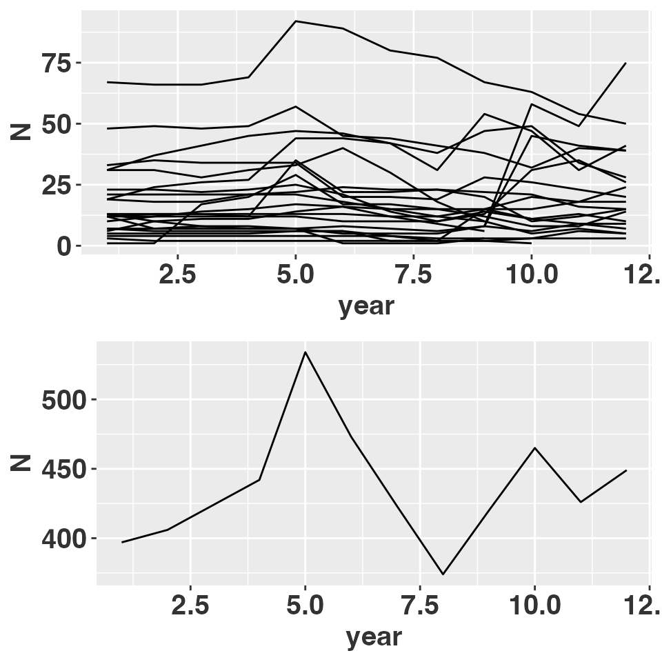
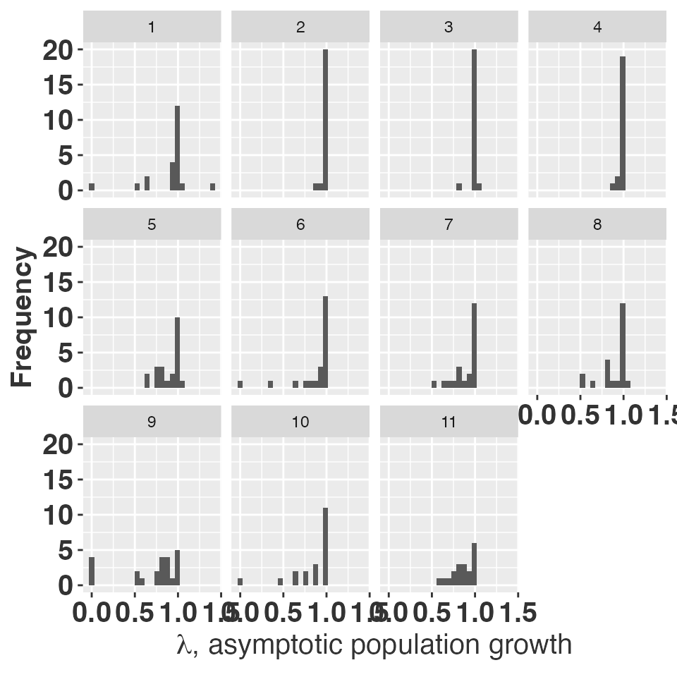
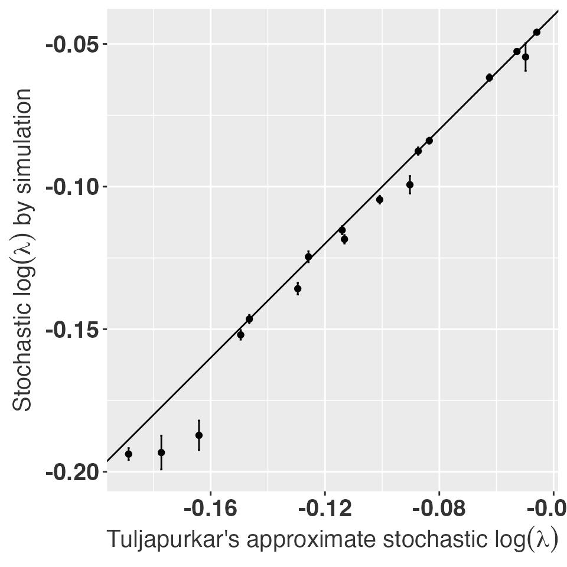
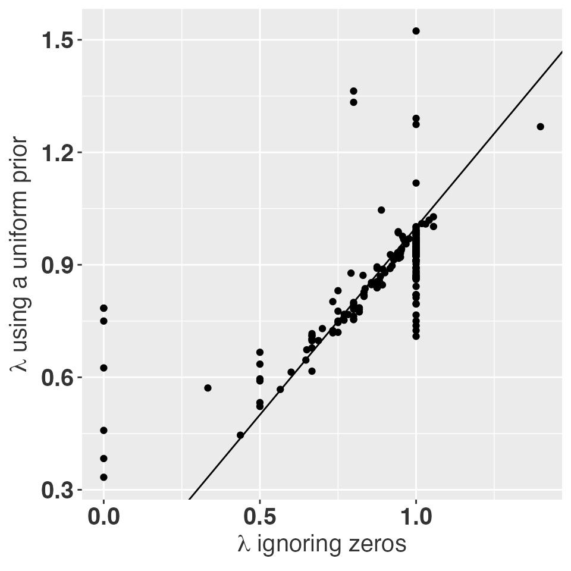
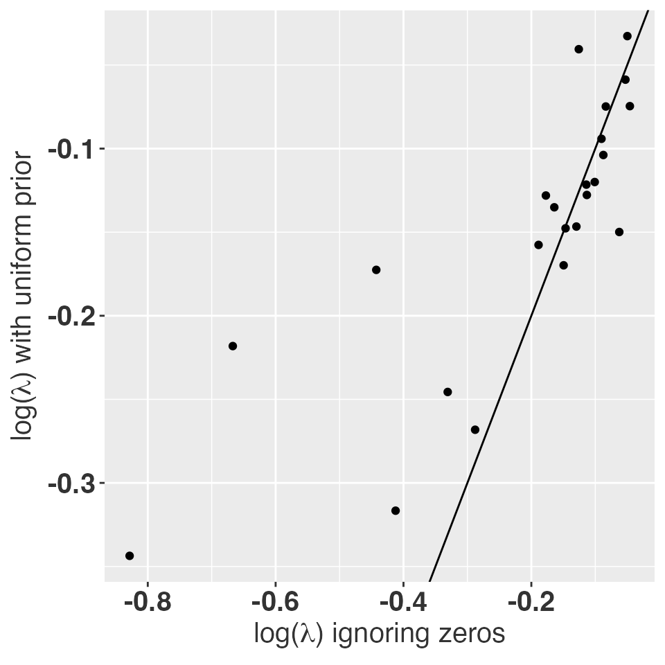
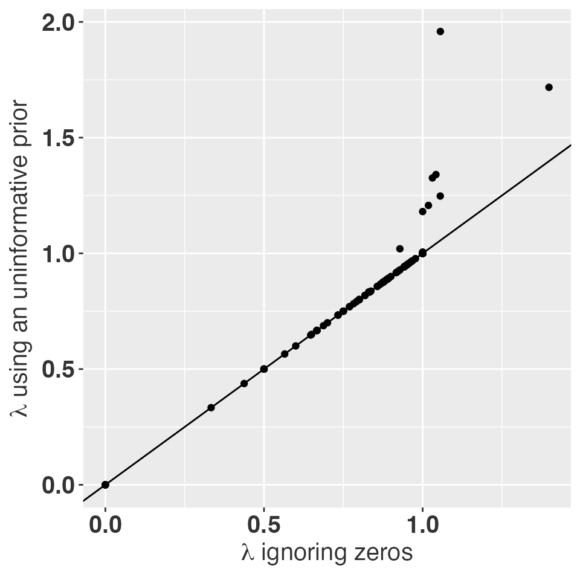
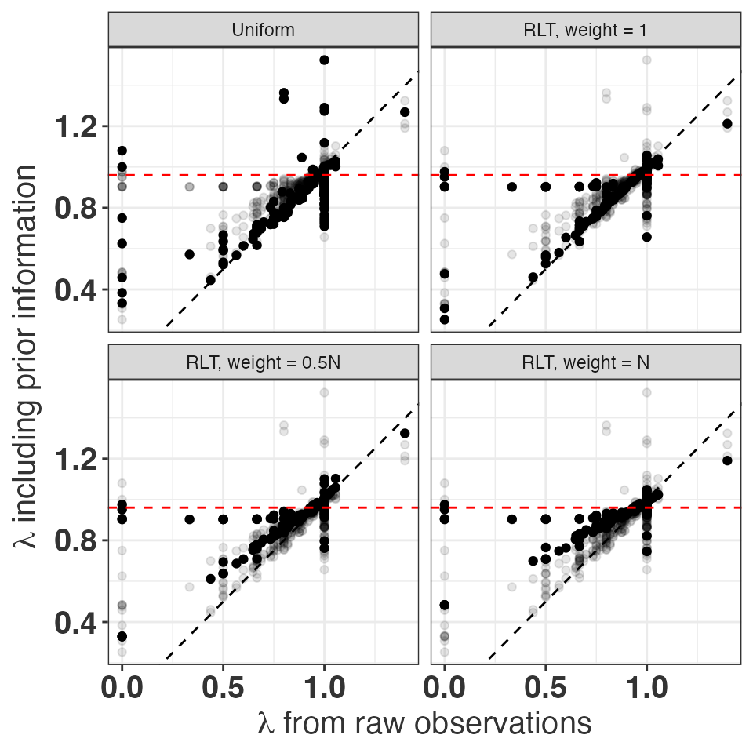
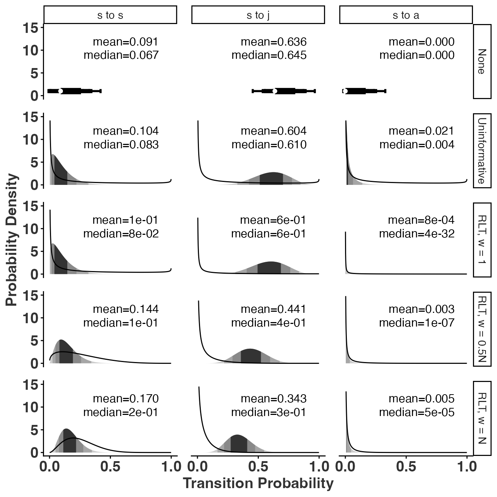
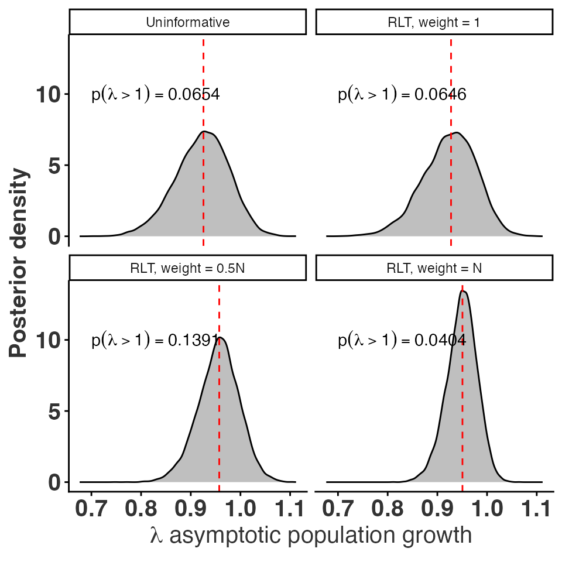

05 Effect of prior information on transition probabilities and fertility
Drew Tyre
Mar 25, 2026
Source:vignettes/transition_priors.Rmd
transition_priors.RmdBorrowing strength
Tremblay and McCarthy (2014) estimated transition probabilities and recruitment rates for another epiphytic orchid from a series of small populations. Although some transitions were not observed in all populations, the presence of a few observations in other populations allowed the statistical models to “borrow strength” from each other and generate estimated probabilities for all transitions. Unfortunately, many (45%; Salguero-Gómez et al. (2015)) plant demography studies are carried out at single sites or few time periods. In those cases there is no information to fill in the blanks for non-observed transitions.
Here we explore the population consequences of setting a prior accounting for counting constraints. Ignoring the problem treats the transition as a fixed zero. This can have severe consequences for matrix structure (Stott et al. 2010). The observed transitions are multinomial rather than binomial events. This can be accommodated by using a Dirichlet prior distribution, albeit at the cost of increased complexity in the calculations. Eberhardt, Knight, and Blanchard (1986) had a small sample size of grizzlies in some age classes. Morris and Doak (pg 197, 2002) recognized the potential problem with small sample sizes for rare transitions, but their recommendation is to use the mathematically more complex approach of Tremblay and McCarthy (2014). Is there anything that can be done on the simple side?
The matrix
We will use observations of an epiphytic Orchid Lepanthes eltoroensis Stimson an endemic species from Puerto Rico (Tremblay and Hutchings 2003).
library(tidyverse)
library(popbio)
library(raretrans)
# Raymond's theme modifications
rlt_theme <- theme(axis.title.y = element_text(colour="grey20",size=15,face="bold"),
axis.text.x = element_text(colour="grey20",size=15, face="bold"),
axis.text.y = element_text(colour="grey20",size=15,face="bold"),
axis.title.x = element_text(colour="grey20",size=15,face="bold"))
A <- projection.matrix(as.data.frame(L_elto),
stage="stage", fate="next_stage",
fertility="fertility", sort=c("p","j","a"))
knitr::kable(A, digits=2,
caption = "Average transition matrix over all census periods and populations.")| p | j | a | |
|---|---|---|---|
| p | 0.37 | 0.01 | 0.05 |
| j | 0.36 | 0.60 | 0.01 |
| a | 0.02 | 0.10 | 0.84 |
Data was collected from 1850 individuals which were permanently identified and tracked over a 6 year period in intervals of 6 months. Thus transitions are for six month intervals and not yearly transitions as is more frequently published. The life history stages included in this analysis are seedlings (individuals without a lepanthiform sheet on any of the leaves), juveniles (individuals with no evidence of present or past reproductive effort, the base of the inflorescence are persistent), and adult (with presence of active or inactive inflorescences). The average population growth rate over all years and populations is 0.86, suggesting a rapid decline.
plotdata <- L_elto %>% group_by(POPNUM, year, stage) %>%
tally() %>%
group_by(POPNUM, year) %>%
summarise(N = sum(n))## `summarise()` has regrouped the output.
## ℹ Summaries were computed grouped by POPNUM and year.
## ℹ Output is grouped by POPNUM.
## ℹ Use `summarise(.groups = "drop_last")` to silence this message.
## ℹ Use `summarise(.by = c(POPNUM, year))` for per-operation grouping
## (`?dplyr::dplyr_by`) instead.
gg1 <- ggplot(plotdata, aes(x=year, y=N, group=POPNUM)) +
geom_line() + rlt_theme
plotsumm <- plotdata %>% group_by(year) %>%
summarize(N=sum(N))
gg2 <- ggplot(plotsumm, aes(x=year, y=N)) +
geom_line() + rlt_theme
ggboth <- gridExtra::arrangeGrob(gg1, gg2)
grid::grid.draw(ggboth)
Population size over time.
OK, now we want to generate matrices for each year and popnum. We
have to change the variables into factors and control the levels so that
the resulting matrices end up with the right shape with zeros for the
missing transitions. Also have to coerce each grouped tbl_df to a
regular data.frame using as.data.frame() before passing to
projection.matrix().
allA <- L_elto %>%
mutate(stage = factor(stage, levels=c("p","j","a","m")),
fate = factor(next_stage, levels=c("p","j","a","m"))) %>%
group_by(POPNUM, year) %>%
do(A = projection.matrix(as.data.frame(.),
stage="stage", fate="fate",
fertility="fertility", sort=c("p","j","a")),
TF = projection.matrix(as.data.frame(.),
stage="stage", fate="fate",
fertility="fertility", sort=c("p","j","a"), TF = TRUE),
N = get_state_vector(as.data.frame(.),
stage="stage", sort=c("p","j","a"))) %>%
filter(year < 12) # last time period all zero for obvious reasonWe end up with all the matrices for each population and year in a
list-column of the result. Working with this thing is a bit
awkward. The best strategy is from Jenny
Bryans’ talk on list columns and uses mutate with map_*(listcolumn,
function).
library(popdemo)
allA <- ungroup(allA) %>%
mutate(A = map(A, matrix, nrow=3, ncol=3,
dimnames=list(c("p","j","a"),c("p","j","a")))) %>%
mutate(lmbda = map_dbl(A, lambda),
ergodic = map_dbl(A, isErgodic),
irreduc = map_dbl(A, isIrreducible),
primitv = map_dbl(A, isPrimitive))
ggplot(allA, aes(x=lmbda)) + geom_histogram(bins = 25) + facet_wrap(~year)+
ylab("Frequency")+
xlab(expression(paste(lambda, ", asymptotic population growth"))) + rlt_theme
histograms of asymptotic population growth for each year.
Now, we need to figure out how many matrices are missing transitions. The full matrix has observed transitions in every cell.
allA <- ungroup(allA) %>% mutate(missing = map(A, ~which(.x==0)),
n_missing = map_dbl(missing, length))
missing_summary <- summary(allA$n_missing)
ergo_irr <- as.data.frame(with(allA, table(ergodic, irreduc)))
knitr::kable(ergo_irr, caption = "Ergodicity and irreducibility of individual transition matrices.")| ergodic | irreduc | Freq |
|---|---|---|
| 0 | 0 | 215 |
| 1 | 0 | 17 |
| 0 | 1 | 0 |
| 1 | 1 | 6 |
Out of 11 time periods and 23 populations there are a total of 238 transition matrices. Some periods are missing for some populations. Only 6 of these matrices are irreducible. All of the matrices have 2 or more transitions that are zero but known to be possible.
## New names:
## • `seedling` -> `seedling...5`
## • `juvenile` -> `juvenile...6`
## • `adult` -> `adult...7`
## • `seedling` -> `seedling...8`
## • `juvenile` -> `juvenile...9`
## • `adult` -> `adult...10`
## • `seedling` -> `seedling...11`
## • `juvenile` -> `juvenile...12`
## • `adult` -> `adult...13`| Population | Year | Stage | N | seedling…5 | juvenile…6 | adult…7 | seedling…8 | juvenile…9 | adult…10 | seedling…11 | juvenile…12 | adult…13 |
|---|---|---|---|---|---|---|---|---|---|---|---|---|
| 905 | 9 | seedling | 0 | 0.000 | 0.000 | 0.000 | 0.250 | 0.042 | 0.042 | 0.250 | 0.004 | 0.000 |
| 905 | 9 | juvenile | 5 | 0.000 | 0.000 | 0.000 | 0.250 | 0.042 | 0.042 | 0.050 | 0.150 | 0.004 |
| 905 | 9 | adult | 5 | 0.000 | 0.000 | 0.000 | 0.250 | 0.042 | 0.042 | 0.010 | 0.004 | 0.158 |
| 905 | 9 | dead | NA | 1.000 | 1.000 | 1.000 | 0.250 | 0.875 | 0.875 | 0.690 | 0.842 | 0.838 |
| 914 | 6 | seedling | 2 | 0.500 | 0.000 | 0.000 | 0.417 | 0.125 | 0.042 | 0.417 | 0.013 | 0.000 |
| 914 | 6 | juvenile | 1 | 0.000 | 0.000 | 0.000 | 0.083 | 0.125 | 0.042 | 0.017 | 0.450 | 0.004 |
| 914 | 6 | adult | 5 | 0.000 | 1.000 | 1.000 | 0.083 | 0.625 | 0.875 | 0.003 | 0.512 | 0.992 |
| 914 | 6 | dead | NA | 0.500 | 0.000 | 0.000 | 0.417 | 0.125 | 0.042 | 0.563 | 0.025 | 0.004 |
| 250 | 5 | seedling | 11 | 0.091 | 0.000 | 0.118 | 0.104 | 0.005 | 0.007 | 0.104 | 0.001 | 0.000 |
| 250 | 5 | juvenile | 47 | 0.636 | 0.574 | 0.000 | 0.604 | 0.568 | 0.007 | 0.588 | 0.581 | 0.001 |
| 250 | 5 | adult | 34 | 0.000 | 0.298 | 0.853 | 0.021 | 0.297 | 0.836 | 0.001 | 0.292 | 0.856 |
| 250 | 5 | dead | NA | 0.273 | 0.128 | 0.029 | 0.271 | 0.130 | 0.150 | 0.308 | 0.126 | 0.144 |
Ignore the problem
Ignoring this problem and calculating stochastic for each population could yield non-sensical results. For example, the geometric mean calculated using simulation fails for 6 out of the 23 populations. These are the populations with one matrix that has at some point.
sgr <- allA %>% split(.$POPNUM) %>%
map(~stoch.growth.rate(.x$A, verbose = FALSE))
# distribute results of stoch.growth.rate() into a tbl
xtrc <- function(x){
data.frame(approx=x$approx,
sim = x$sim,
lowerci = x$sim.CI[1],
upperci = x$sim.CI[2])
}
sgr <- bind_rows(map(sgr, xtrc), .id="POPNUM")
filter(sgr, !is.na(sim)) %>%
ggplot(aes(x=approx, y = sim)) + geom_point() +
geom_errorbar(aes(ymin=lowerci, ymax=upperci)) +
geom_abline(slope = 1, intercept=0) +
rlt_theme +
xlab(expression(paste("Tuljapurkar's approximate stochastic ", log(lambda)))) +
ylab(expression(paste("Stochastic ", log(lambda), " by simulation")))
Stochastic population growth rates for 17 out of 23 orchid populations.
The six populations where the simulated values are unavailable have very low approximate growth rates as well. All the stochastic growth rates are less than 1. Note that these calculations assume each matrix is perfectly observed; the only stochasticity is between year environmental stochasticity as represented by the observed sample of years.
Fill in including constraints on transitions
This strategy uses the transitions in a smarter way that maintains
the constraint that all survival/transition probabilities have to add up
to 1. We do this by using a dirichlet prior with the function
fill_transitions(). This function takes the matrix as a
list of 2 components, a matrix of transition probabilities
and a matrix of fertility contributions
.
The Dirichlet prior only applies to the
matrix. If not specified, the function assumes a uniform prior across
the
fates for each stage. The extra category is for individuals that do not
survive. Let’s look at a single example to see how it works, using
population 231 in period 1. This matrix is non-ergodic and reducible,
and there are individuals in every stage.
#
tmat <- allA[23,"TF"][[1]][[1]]$T ## wow! hard to get at ...
fmat <- allA[23,"TF"][[1]][[1]]$F
N <- allA[23,"N"][[1]][[1]]
tmat + fmat##
## p j a
## p 0.0000 0.0000 0.1250
## j 0.0000 0.0000 0.0000
## a 1.0000 0.0000 0.9375The matrix is reducible because the 2nd column and 2nd row could be eliminated without affecting population growth; this is because the 2 juveniles died. The matrix is not ergodic because there is no path from the 2nd stage to either of the other stages.
isErgodic((tmat + fmat)[-2,-2])## [1] TRUE
isIrreducible((tmat + fmat)[-2,-2])## [1] TRUE## [1] TRUESo, to add a uniform dirichlet prior with a weight of 1 to , we have 4 fates (3 + death), so each fate adds 0.25 to the matrix of observed fates (not the transition matrix!).
# get matrix of observed fates, including a row for mortality
# apply(tmat, 1, function(x)x * N)
(TNmat <- L_elto %>%
mutate(stage = factor(stage, levels=c("p","j","a","m")),
fate = factor(next_stage, levels=c("p","j","a","m"))) %>%
filter(POPNUM == allA$POPNUM[23], year == allA$year[23]+1) %>%
as.data.frame() %>%
xtabs(~fate + stage, data = .) %>%
as.matrix())## stage
## fate p j a m
## p 1 0 0 0
## j 0 5 0 0
## a 0 1 14 0
## m 1 0 2 0
(TNmat2 <- (TNmat + 0.25)[,-4]) # re-cycles automatically, and drop last column (no one starts as m)## stage
## fate p j a
## p 1.25 0.25 0.25
## j 0.25 5.25 0.25
## a 0.25 1.25 14.25
## m 1.25 0.25 2.25This matrix has the dirichlet parameters for each state. To convert this to a transition matrix we have to normalize each column by the sum of that column, then drop the last row to return to a square matrix.
## stage
## fate p j a
## p 0.41666667 0.03571429 0.01470588
## j 0.08333333 0.75000000 0.01470588
## a 0.08333333 0.17857143 0.83823529
lambda(tmat2 + fmat)## [1] 0.9084171
isErgodic(tmat2 + fmat)## [1] TRUE
isIrreducible(tmat2 + fmat)## [1] TRUEComparing these matrices, we can see that all transitions are now represented, even those that were not observed in the actual data. We can automate this exercise for all matrices.
testing <- allA %>% mutate(Adirch = map2(TF, N, fill_transitions, returnType = "A"),
ldirch = map_dbl(Adirch, lambda),
irrdirch = map_dbl(Adirch, isIrreducible),
ergdirch = map_dbl(Adirch, isErgodic),
TN = map2(TF, N, fill_transitions, returnType = "TN"))
ggplot(testing, aes(x=lmbda, y=ldirch)) + geom_point() +
geom_abline(slope = 1, intercept=0) +
xlab(expression(paste(lambda, " ignoring zeros"))) +
ylab(expression(paste(lambda, " using a uniform prior"))) +
rlt_theme
Asymptotic growth rate using a uniform prior with a total weight of 1 vs. the asymptotic growth rate for the observed data.
The matrices with typically have very few individuals that all die. Matrices with usually have observed transitions only on the main diagonal.
ergo_irr <- as.data.frame(with(testing, table(ergdirch, irrdirch)))
knitr::kable(ergo_irr, caption = "Ergodicity and irreducibility of individual transition matrices.")| ergdirch | irrdirch | Freq |
|---|---|---|
| 1 | 1 | 238 |
sgr_unif <- testing %>% split(.$POPNUM) %>%
map(~stoch.growth.rate(.x$Adirch, verbose = FALSE))
sgr_unif <- bind_rows(map(sgr_unif, xtrc), .id="POPNUM")
compare_approx <- tibble(unif = sgr_unif$approx,
ignored = sgr$approx)
ggplot(compare_approx, aes(x=ignored, y = unif)) +
geom_point() +
geom_abline(slope = 1, intercept=0) +
xlab(expression(paste("log(",lambda,") ignoring zeros"))) +
ylab(expression(paste("log(",lambda,") with uniform prior"))) +
rlt_theme
So using a Dirichlet prior to fill in the gaps works, and doesn’t appear to distort the stochastic population growth rate; all populations still have negative growth. Most populations end up with stochastic growth rates that are lower than with the problematic matrices. All resulting matrices are now ergodic and irreducible.
Fill in using uninformative priors on fertility
The other component of the matrix is the fertility. We do this by
using a Gamma prior with the function fill_fertility().
This function takes the matrix as a list of 2 components, a matrix of
transition probabilities
and a matrix of fertility contributions
.
The Gamma prior only applies to the
matrix. If not specified, the function assumes an uniformative prior
with
across all stages. Again, demonstrate with a single example. The
posterior
is given by the sum of the prior
and the number of offspring next year (2 in this case), while the
posterior
is simply the sum of the prior and the number of adults contributing to
the observed reproduction.
post_alpha = 0.00001 + 2
post_beta = 0.00001 + N[3]The expected value for the posterior is .
fmat2 <- fmat
fmat2[1,3] <- post_alpha / post_beta
fmat2##
## p j a
## p 0.0000000 0.0000000 0.1250005
## j 0.0000000 0.0000000 0.0000000
## a 0.0000000 0.0000000 0.0000000
lambda(tmat + fmat2)## [1] 1.055885
isErgodic(tmat+fmat2)## [1] FALSE
isIrreducible(tmat+fmat2)## [1] FALSEThe uninformative prior on fertility makes very little difference to lambda, and does not help with issues of ergodicity and irreducibility.
testing <- allA %>% mutate(Agamma = map2(TF, N, fill_fertility,
alpha = 0.00001,
beta = 0.00001,
priorweight = 1, returnType = "A"),
lgamma = map_dbl(Agamma, lambda),
irrgamma = map_dbl(Agamma, isIrreducible),
erggamma = map_dbl(Agamma, isErgodic))
ggplot(testing, aes(x=lmbda, y=lgamma)) + geom_point() +
geom_abline(slope = 1, intercept=0) +
xlab(expression(paste(lambda, " ignoring zeros"))) +
ylab(expression(paste(lambda, " using an uninformative prior"))) +
rlt_theme
Asymptotic growth rate using a uniform prior with a total weight of 1 vs. the asymptotic growth rate for the observed data.
The matrices with typically have very few individuals. Matrices with usually have transitions only on the main diagonal. The uninformative Gamma prior does not change , and does not improve the ergodicity and irreducibility issue. When there is at least 1 adult present, the expected value of fertility is very close to zero. When there are no adults present, all those matrices cannot reach the adult stage and so the expected value of fertility does not affect . However, this is not a necessary condition.
ergo_irr <- as.data.frame(with(testing, table(erggamma, irrgamma)))
knitr::kable(ergo_irr, caption = "Ergodicity and irreducibility of individual transition matrices.")| erggamma | irrgamma | Freq |
|---|---|---|
| 0 | 0 | 162 |
| 1 | 0 | 0 |
| 0 | 1 | 0 |
| 1 | 1 | 76 |
Effects of informative priors
We extracted an informative prior from an expert on epiphytic orchids (RLT) to compare with the uniform prior. In particular, we considered the effects of weighting the prior by different fractions of the actual sample size for each population and year.
RLT_Tprior <- matrix(c(0.25, 0.025, 0.0,
0.05, 0.9, 0.025,
0.01, 0.025, 0.95,
0.69, 0.05, 0.025),
byrow = TRUE, nrow = 4, ncol = 3)
RLT_Fprior <- matrix(c(NA_real_, NA_real_, 0.025,
NA_real_, NA_real_, NA_real_,
NA_real_, NA_real_, NA_real_),
byrow = TRUE, nrow = 3, ncol = 3)
unif_gamma <- matrix(c(NA_real_, NA_real_, 0.00001,
NA_real_, NA_real_, NA_real_,
NA_real_, NA_real_, NA_real_),
byrow = TRUE, nrow = 3, ncol = 3)The RLT prior gives . In an ideal world this prior would be extracted prior to collecting the data. In this case the prior is only being used to demonstrate the technique.
diffPriors <- list()
diffPriors[["Uniform"]] <- testing %>%
mutate(Tprior = map2(TF, N, fill_transitions, returnType = "T"),
Fprior = map2(TF, N, fill_fertility,
alpha = unif_gamma,
beta = unif_gamma, priorweight = -1, returnType = "F"),
Aprior = map2(Tprior, Fprior, `+`),
lprior = map_dbl(Aprior, lambda))
diffPriors[["RLT, weight = 1"]] <- testing %>%
mutate(Tprior = map2(TF, N, fill_transitions,
P = RLT_Tprior, returnType = "T"),
Fprior = map2(TF, N, fill_fertility,
alpha = RLT_Fprior,
beta = unif_gamma + 1, priorweight = -1, returnType = "F"),
Aprior = map2(Tprior, Fprior, `+`),
lprior = map_dbl(Aprior, lambda))
diffPriors[["RLT, weight = 0.5N"]] <- testing %>%
mutate(Tprior = map2(TF, N, fill_transitions,
P = RLT_Tprior, priorweight = 0.5, returnType = "T"),
Fprior = map2(TF, N, fill_fertility,
alpha = RLT_Fprior,
beta = unif_gamma + 1, priorweight = 0.5, returnType = "F"),
Aprior = map2(Tprior, Fprior, `+`),
lprior = map_dbl(Aprior, lambda))
diffPriors[["RLT, weight = N"]] <- testing %>%
mutate(Tprior = map2(TF, N, fill_transitions,
P = RLT_Tprior, priorweight = 1, returnType = "T"),
Fprior = map2(TF, N, fill_fertility,
alpha = RLT_Fprior,
beta = unif_gamma + 1, priorweight = 1, returnType = "F"),
Aprior = map2(Tprior, Fprior, `+`),
lprior = map_dbl(Aprior, lambda))
diffPriors <- bind_rows(diffPriors, .id="prior")
diffPriors$prior <- factor(diffPriors$prior, levels = c("Uniform", "RLT, weight = 1",
"RLT, weight = 0.5N", "RLT, weight = N"))
ggplot(diffPriors, aes(x=lmbda, y=lprior)) +
geom_point() +
geom_point(data=select(diffPriors, -prior), alpha=0.1) +
geom_abline(slope = 1, intercept=0, linetype = 2) +
ylab(expression(paste(lambda, " including prior information"))) +
xlab(expression(paste(lambda, " from raw observations"))) +
facet_wrap(~prior) +
geom_hline(yintercept = 0.96, color="red", linetype = 2 ) +
theme_bw() + rlt_theme
Asymptotic growth rates using prior information on transitions and fertility vs. the raw observations alone. The horizontal red line indicates for the RLT prior. Points for all four priors shown in transparent grey.
Obtaining credible intervals on vital rates and
Recognizing that the observed transitions are realizations of a Dirichlet distribution gives us a very simple way to derive credible intervals for the transition probabilities in our matrix. The marginal distribution of a single transition is a beta distribution as described above, and we can simply report the 2.5% and 97.5% percentiles of that distribution to provide a credible interval on a transition rate. These intervals do shift and shrink as the weight on the prior increases.

Confidence limits or Credible intervals for transition probabilities out of seedling stage in Population 250, year 5. Shaded bands correspond to 50% (darkest), 90%, 95% and 99.9% (lightest) credible intervals. Smaller intervals are not visible in the p->a transitions when the upper boundary of the interval is smaller than 0.01. Labels are median (lower 95% CI, upper 95% CI). Note that where the median and lower interval are equal to 0.001, the actual value is < 0.001.
Obtaining credible intervals on requires simulation, because it is difficult (or maybe impossible) to use the characteristic equation to combine the probability distributions of the matrix entries to obtain the distribution of .
#71 popn 250 year 5 lambda = 0.93
diffPriors_lci <- list()
samples = 10000
diffPriors_lci[["Uninformative"]] <- tibble(A = sim_transitions(allA$TF[[71]],
allA$N[[71]],
samples = samples),
lprior = map_dbl(A, lambda))## Warning in fill_fertility(TF, N, alpha = alpha, beta = beta, priorweight =
## priorweight, : length(alpha | beta) != order^2: only using first value of alpha
## and beta
diffPriors_lci[["RLT, weight = 1"]] <- tibble(A = sim_transitions(allA$TF[[71]], allA$N[[71]],
P=RLT_Tprior,
alpha = RLT_Fprior,
beta = unif_gamma + 1,
samples = samples),
lprior = map_dbl(A, lambda))
diffPriors_lci[["RLT, weight = 0.5N"]] <- tibble(A = sim_transitions(allA$TF[[71]], allA$N[[71]],
P=RLT_Tprior,
alpha = RLT_Fprior,
beta = unif_gamma + 1,
priorweight = 0.5,
samples = samples),
lprior = map_dbl(A, lambda))
diffPriors_lci[["RLT, weight = N"]] <- tibble(A = sim_transitions(allA$TF[[71]], allA$N[[71]],
P=RLT_Tprior,
alpha = RLT_Fprior,
beta = unif_gamma + 1,
priorweight = 1,
samples = samples),
lprior = map_dbl(A, lambda))
diffPriors_lci <- bind_rows(diffPriors_lci, .id="prior")
diffPriors_lci$prior <- factor(diffPriors_lci$prior, levels = c("Uninformative", "RLT, weight = 1",
"RLT, weight = 0.5N", "RLT, weight = N"))
diffPriors_lci_sum <- group_by(diffPriors_lci, prior) %>%
summarize(pgt1 = sum(lprior > 1)/samples,
lmedian = median(lprior),
lmean = mean(lprior),
label = paste0("p(lambda > 1) == ",pgt1)) %>%
mutate(x = 0.7, y = 10) %>%
ungroup()
ggplot(diffPriors_lci, aes(x=lprior)) +
geom_density(fill="grey75") +
geom_vline(data = diffPriors_lci_sum,
mapping = aes(xintercept = lmedian), linetype = 2, color = "red") +
geom_text(data = diffPriors_lci_sum,
mapping = aes(x = x, y = y, label = label), parse = TRUE, hjust = "left") +
facet_wrap(~prior) +
theme_classic() +
rlt_theme +
xlab(expression(paste(lambda," asymptotic population growth"))) +
ylab("Posterior density")
Distribution of asymptotic population growth rates for population 250, year 5, with different prior information.